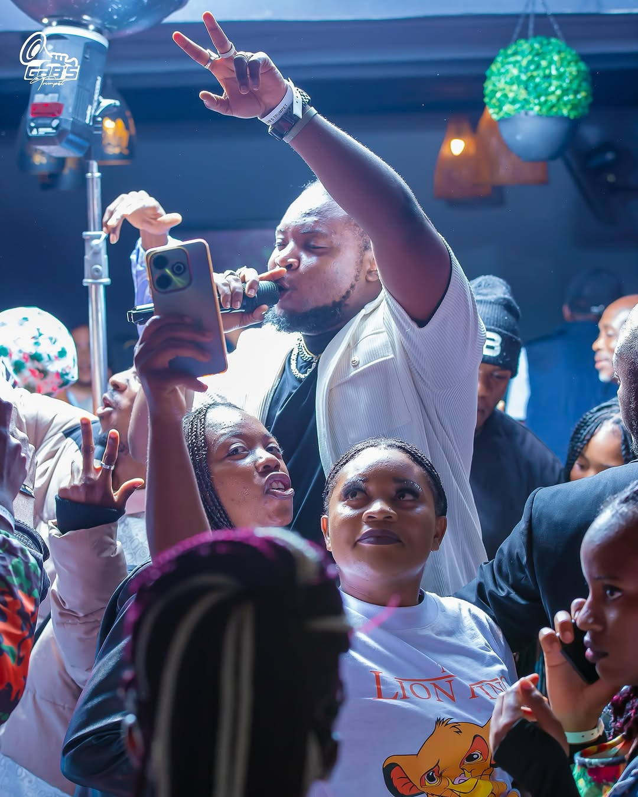

Use Headphone For Better Experience.
KWACHA AWARDS 2024!
August 3, 20
 4 Min
4 Min
JC Kalinks Wins Best Male Newcomer at the Kwacha Music Awards
In 2024, Zambian musician JC Kalinks was honored with the Best Male Newcomer award at the prestigious Kwacha Music Awards. This accolade highlights his significant impact on the Zambian music scene within a short period.The Kwacha Music Awards, held annually, celebrate outstanding achievements in Zambia's music industry. JC Kalinks' recognition in the Best Male Newcomer category underscores his talent and the warm reception of his music by fans and industry professionals alike.
During the awards ceremony, JC Kalinks delivered a captivating performance, further solidifying his reputation as a dynamic and engaging artist. His unique blend of Afrobeat, dancehall, and hip-hop continues to resonate with audiences, marking him as a rising star to watch in the Zambian music landscape.

"Dubbed "The Bluetooth," JC Kalinks has built a strong connection with fans through his storytelling and authentic artistry. His songs like "Maradona" and "Ichibyongo" have become anthems"
As he continues to grow, JC Kalinks is not just making music—he’s building a legacy that resonates with the heart of African music lovers.
jc kalinks.